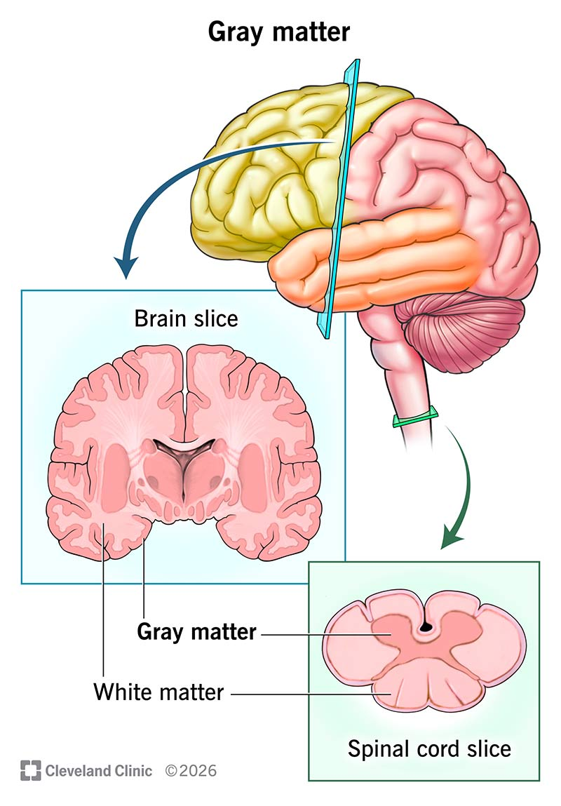
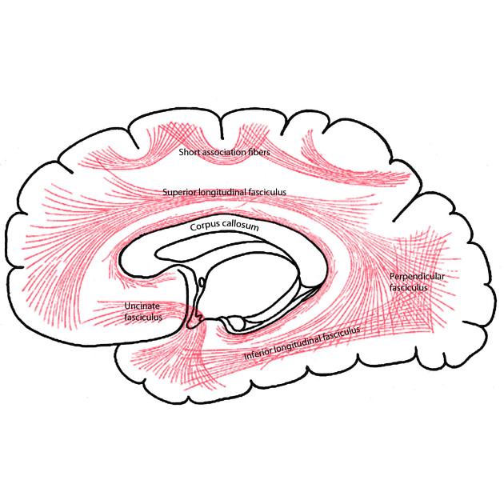
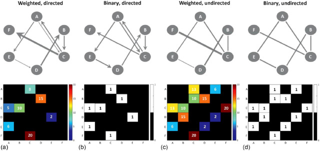
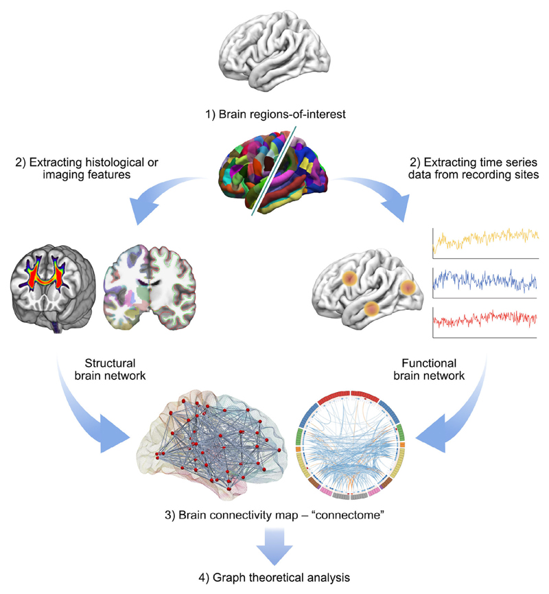
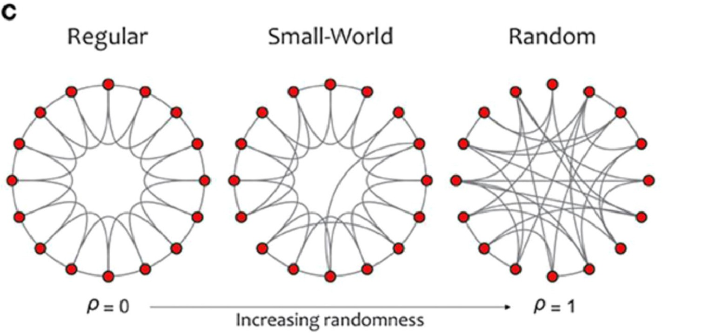
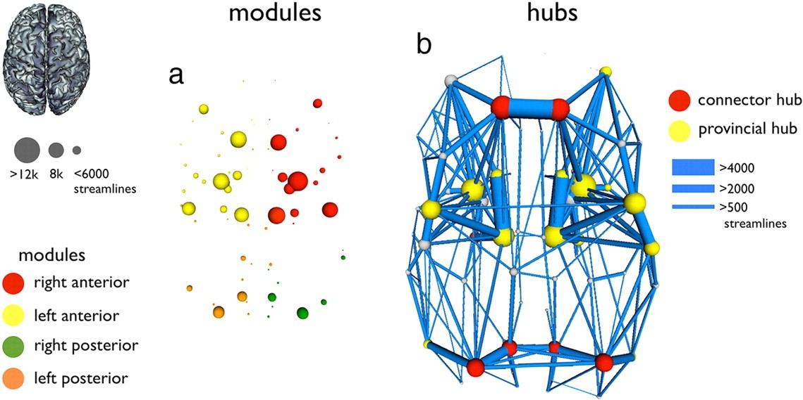
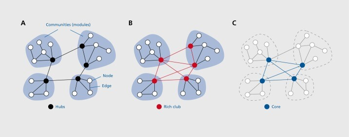

Preface
I am very thrilled to announce that starting next month, I will be joining Dr. Jacob Vogel’s lab to begin my Master’s research project🎉! As the lab’s name(Dementia Multi-Omics and Neuroimaging) suggests, it is a powerhouse specializing in omics, AI, and neuroimaging. I will be responsible for a portion of the follow-up validation work on Dr. Xiao’s research regarding the SIR model in tau dynamics in Alzheimer’s Disease (AD).
Amidst all the excitement, I must admit that everything feels overwhelmingly difficult—so much so that it’s actually intimidating. Everyone on the team comes from a background in mathematics, computer science, engineering, or machine learning. Literally everyone works with data. Yet my experience sits on the exact opposite end of the spectrum: some wet-and-dry lab work, understanding of zebrafish hearts and embryonic structures (which are nowhere near as complex as the human brain and neural networks), and very limited programming skills (I love it, though!). Having just left the beginner’s village, it feels like I’ve stumbled into a hell-level dungeon (after all, this is a “DeMON” lab!).
Sun Tzu’s The Art of War says: “If you know the enemy and know yourself, you need not fear the result of a hundred battles.” So, even though I haven’t officially started my project yet, I’ve been doing extensive literature surveys just to figure out what exactly I’m up against. Richard Feynman once said that the best way to prove you understand something is to explain it to someone else. Therefore, I am trying to organize my literature reading notes into this series of blog posts.
This is the first piece of my study log series prepared for my upcoming project. The series is expected to have 4 posts in total, covering the connectome, neuroimaging techniques, brain neurological diseases, and algorithm frameworks related to the connectome.
This post focuses on sorting out the foundational concepts of the “Connectome.” From a connectome perspective, the brain is by no means a simple collection of isolated brain regions connected to one another; rather, it is a highly complex, large-scale network tightly interconnected through axonal pathways. Much like the vast networks of global transportation or the internet, the brain’s power stems from its connectivity. Deciphering this map has now become the primary goal of modern neuroscience.
1. The Structure of the Cerebral Cortex
Before diving into algorithms, we need to refactor our understanding of brain structure. In everyday common sense, we simply view the brain as an organ composed of the cerebrum, cerebellum, and brainstem. However, in some neuroscience research focused specifically on the cerebral cortex, the cerebellum and brainstem are sometimes excluded to simplify the model. Researchers further divide the brain into the Cerebral Cortex (CC) and Subcortical (SC) structures based on layers from the outside in.
Grey Matter (GM) and White Matter (WM) are the basic hardware of the brain. GM acts as the information processing center, densely packed with a large number of neuronal cell bodies. On the other hand, WM consists of neuronal axons wrapped in myelin to form white matter tracts. Brain activities with specific functions involve integrating information from multiple distant brain regions, and this integration is achieved through projections carried out by the WM tracts connecting these different areas.

What is projection?
Projection is a crucial concept in neuroscience. When a group of neurons located in brain region A extends long WM tracts toward a distant brain region B to transmit signals, a projection is said to occur from region A to region B.

2. From Raw Data to the Connectivity Matrix
How do we organize a massive cluster of something abstract, blurry, and looking very much like a cat’s furball into analyzable data? To understand brain structural and functional connections and construct the connectome, Graph Theory, which originally used for network analysis, was introduced to this filed. Under its framework, the brain is abstracted into a network composed of nodes and edges: nodes represent different brain regions, and edges represent the connections between them. Obtaining connectome data generally follows a pipeline from raw data to defining nodes and edges, and finally to the connectivity matrix.

Defining Nodes
Try to image studying a global aviation network. You CANNOT simply start tracking the flight trajectory of every single airplane right from the beginning. You first need to define what (or where) Copenhagen is and where Beijing is, and in that way you know whether a plane flew from China to Denmark or from Japan to the United States. However, the cerebral cortex is not like Earth, which has clear coastlines, mountain ranges, and borders with political implications, it is essentially a continuous biological structure. By referencing anatomical structures, cell types, and even functional information, researchers identify homogeneous areas of GM and partition them into distinct Regions of Interest (ROIs), which define the nodes of the brain network. The choice of this parcellation scheme currently lacks a universal standard. Which scheme and parcellation scale yield the least impact on the topological properties of the connectome remains a matter of ongoing debate.
Defining Edges
Once the nodes are defined, the next task is to draw the lines connecting them. Strictly speaking, this is not as simple as drawing a straight line on a map like a “direct flight from Beijing to Copenhagen.” The raw data we possess consists of thousands of neuroimaging and biological datasets, which act more like the “footprints” left between nodes. Defining an “edge” is essentially abstracting these complex data into a “connection strength” between nodes. Different data and abstraction methods give rise to two completely different sets of edges, which form the base of the brain connectome:
Structural Connectivity (SC)
The edges of SC represent physical white matter fiber tracts. Its data source comes from non-invasive imaging techniques such as Diffusion Tensor Imaging (DTI) or diffusion magnetic resonance imaging. Due to the physical obstruction by myelin and axons, water molecules in the brain tend to diffuse more easily along the direction of the fiber tracts rather than penetrating them perpendicularly. Based on this physical principle, the construction of SC typically involves the following steps:
- Voxel Direction Estimation: The algorithm first estimates the primary diffusion direction of water molecules within each tiny imaging unit (Voxel).
- Generating Streamlines: Arrows with consistent directions in adjacent voxels are connected to generate aggregated “Streamlines,” thereby reconstructing the 3D trajectory of white matter fiber tracts. Streamlines are not single, real nerve fibers, but rather paths inferred by the algorithm.
- Allocating Streamlines: The algorithm checks which two specific GM nodes these generated streamlines connect, thereby establishing a physical “edge.”
Functional Connectivity (FC)
FC does not care about physical circuits, instead, it cares about logical synchronization. Its edges are defined by calculating the statistical correlation of neural activity signals (such as blood-oxygen signals in fMRI) between two nodes over a period of time. Its data source primarily comes from resting-state functional Magnetic Resonance Imaging (rs-fMRI), or electromagnetic recordings such as electroencephalography (EEG) or magnetoencephalography (MEG). If two regions are constantly resonating at the same frequency, they are considered to share a “functional edge.”
- Data Acquisition: Dynamically changing signals are obtained by measuring indicators of interest (such as blood oxygen or electrophysiology).
- Extracting Time Series: Signals from all the tiny voxels within each node are averaged so that every node in the brain acquires its own exclusive “activity curve” fluctuating over time, known as a Time Series.
- Calculating Statistical Dependency: By comparing the time series of any two nodes and calculating the statistical correlation between them, their synchronization rate is quantified.
In different studies, as demands and perspectives shift, researchers have defined more specialized and subdivided edges, such as Structural Covariance (SCov) and Effective Connectivity (EC). Some have even incorporated more specific biological indicators, such as Neurotransmitter distribution Similarity (NS), electrophysiological signal covariation (EP), and time-spectrum similarity (TS).
Integrating Node and Edge Information to Generate the Full Connectivity Matrix
Once all nodes are partitioned and all edges are quantified (whether based on fiber streamlines for SC or synchronization rates for FC), they will eventually converge into a single mathematical Connectivity Matrix.
It is worth mentioning that, a large number of biases may exist in this process, making appropriate corrections highly necessary. At the same time, the essence of graph theory is an abstract summary of brain structure that lacks underlying biological mechanisms. Therefore, research fields like the synaptome and nanoscale connectome atlases are also developing and are expected to complement the connectome in the future.

From what we all learned in biology class, neural signals travel in a very clear, one-way direction: they fire from the axon of an upstream neuron, cross the synapse, and are received by the dendrite of a downstream neuron. Just because brain region A projects to brain region B definitely does not mean B projects back to A.
Yet, in our current brain connectome modeling, the matrices we build for both SC and FC are symmetrical, undirected graphs (meaning the connections look like two-way streets). This happens because our current neuroimaging technologies lose that directional information while generating the raw data.
To patch this issue, the concept of Effective Connectivity (EC) was introduced (also mentioned above!). EC is a specific type of functional connectivity that reflects the directed, causal influence of one brain region over another. By applying causal models to analyze the chronological order of the time series, algorithms can make a clever deduction: if the signal changes in Node A always happen slightly earlier than in Node B, and the changes in A can predict the changes in B, the algorithm will conclude that “A caused B.” Thus, it draws a directed edge pointing from A to B.
3. The Connectome of the Healthy Human Brain
Small-Worldness
One of the most fundamental principles of brain organization revealed by graph theory is small-worldness. Originally a concept in network science, a small-world network is characterized by a high clustering coefficient and a short path length. This unique combo allows for highly efficient local functional segregation and global functional integration.
When applying graph theory to analyze brain networks, researchers discovered that both structural and functional connections in the brain exhibit this small-world structure. A healthy brain’s organization displays non-random topological features, such as modularity and community structures, allowing the brain to achieve high-efficiency information processing at a remarkably low cost.

Community: Functional Segregation
A community or module refers to a cluster of nodes in a network that are highly interconnected, while the connections between different modules are relatively sparse. This structure supports efficient Functional Segregation in the brain, meaning it allows specific biological functions or cognitive tasks to be highly specialized and processed locally—such as sensorimotor and visual processing.
Hub: Super Factory
Hub nodes refer to specific nodes in the network that have high centrality or high connectivity. They can be divided into Provincial Hubs (which primarily connect with nodes within their own community) and Connector Hubs (which are responsible for bridging different communities).
From a structural perspective, neurons in hub regions typically possess more complex dendritic trees and a higher density of dendritic spines. Functionally, hubs are characterized by Slow Fluctuation (neural electrophysiological or blood-oxygen signals change slowly over time) and High Autocorrelation (operating on a longer timescale). This aligns perfectly with the heavy lifting they do in complex signal integration. However, this comes with high metabolic demands, such as high glucose metabolism and high blood flow, making hubs regionally vulnerable in several neurodegenerative diseases.
Rich-Club: It Really Is
The rich-club refers to a phenomenon where highly connected hub nodes (the “rich” nodes) in a network are more densely connected to each other than what would be expected by random chance. They form an elite core set. The rich-club is vital for cross-brain Functional Integration, allowing signals from different sensory or cognitive domains to converge and exchange at these central crossroads.


This post introduced the basics of the connectome from three angles: brain structure, connectome construction pipelines, and the network properties of the connectome. The next post will dive deeper into how current neuroimaging technologies actually capture this data.
🚨 Alert! This is merely the beginning of my “infinite literature-reading hell.” I truly hope that as I grind through this project, my writing and storytelling skills will level up accordingly.
Also sorry for not attaching all the reference literature at the end of this post. I will add them later, or perhaps just write a completely new, dedicated post summarizing the bibliography once this entire series is complete. Stay tuned!